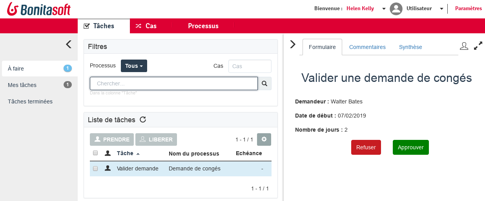
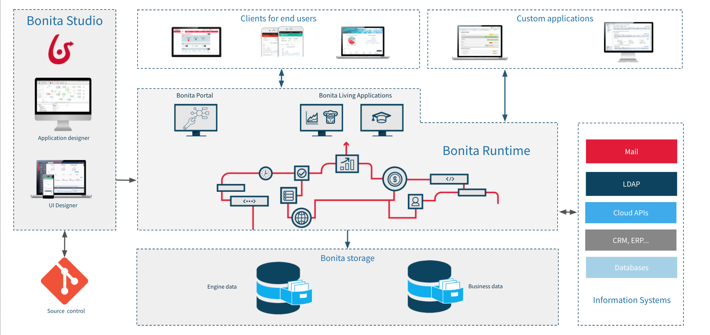

Checklist
- Télécharger les fichiers du Bonita Camp depuis GitHub : https://github.com/Bonitasoft-Community/bonita-camp/releases
- Installer la dernière version du Studio (cf document exercices)
- Démarrer le Studio et cliquer le bouton Portail
- Nous recommandons d'utiliser
 ou lors de vos développements
ou lors de vos développements
Programme
- La solution Bonita et les composants de Bonita
- Introduction au BPMN
- Gestion des données et contrats
- L'interface utilisateur (Formulaires et pages)
- Gestion des utilisateurs
- Connecteurs
- Applications
- Déploiement
La solution Bonita
- Limite le volume de code nécessaire pour construire une application
- S'appuie sur des modèles (e.g. diagrammes BPMN) pour définir les applications
- Les modèles améliorent la collaboration lors de la définition des applications
- Une approche orientée processus facilite la coopération lors de l'exécution des processus
- Permet de suivre et optimiser l'exécution des processus
Composants de Bonita
Quatre composants principaux :
- Bonita Studio
- Bonita UI Designer
- Bonita Engine
- Bonita Portal
Engine + Portal : packagés dans une application web JEE (war)
Le Studio embarque un environnement de test avec Tomcat + application web
Studio : éditeur de diagrammes

Studio : UI Designer

Portail Bonita
Interface web pour l'utilisateur final et l'administrateur
- Présente la liste des tâches à réaliser
- Permet de déployer et configurer des formualaires, processus et des applications métiers crées avec l'UI Designer
- Permet de gérer l'organisation 

Moteur Bonita
Fournit un ensemble de services
Responsable de l'exécution des processus (pas d'interface graphique)
Expose des API REST
Basé sur Java SE
Encapsulé avec le Portal dans une application web Java
Requiert :
- Serveur d'application Java EE
- Base de données transactionnelle compatible avec JDBC
Architecture de la plateforme Bonita
Introduction au BPMN
Notation standard pour la modélisation des processus
Les éléments essentiels :
 | Pool : un pool par processus |
 | Événement de début : le démarrage d'un processus |
 | Tâche humaine : quand un utilisateur est impliqué |
 | Tâche automatique/service : exécutée par le moteur |
 | Événement de fin : déclenche l'archivage du processus |
| → | Transition : utilisée pour lier les éléments entre eux |
Portes logiques
3 types de portes logiques :
 | Exclusive |  |
 | Parallèle | |
 | Inclusive |
- Les conditions sont définies sur les transitions sortantes. Pas de conditions pour les portes parallèles
- Une bonne pratique consiste à utiliser les portes de manière symétrique pour améliorer la lisibilité
Exercice 1
Modélisation basique de processus
Si vous ne l'avez pas déjà fait, téléchargez les instructions et les corrections à partir de GitHub : https://github.com/Bonitasoft-Community/bonita-camp/releases
BDM : Business Data Model
- Stocke les données métier en lien avec les processus et/ou les applications
- Le modèle définit des objets pour stocker les données métier
- Le modèle est défini dans le Studio
- Depuis le modèle Bonita génère des classes Java (POJO) et crée les tables en base de données
- La persistance est gérée par le moteur
BDM : utilisation
- Déclarer des variables métier dans la définition du processus
- Create/Read/Update/Delete en utilisant : valeur par défaut, opérations, connecteurs...
- Peuvent être partagés entre différentes instance de processus
- Cycle de vie contrôlé par le développeur
- API pour les opérations de lecture
Données de formulaire
- Stocke et traite les données affichées et mise à jour dans les UI
- Accessible depuis le navigateur web
- Tout type d'objet JavaScript
- Initialisées et mises à jour par : les saisies utilisateur, appels API REST, code JavaScript
- Non persistées
Documents
- Bonita fournit un système de GED léger
- Les références aux documents font partie de la définition de processus
- Lors de l'exécution les documents peuvent être initialisés, mis à jour...
- Contrairement aux BDM, les documents sont associés à une instance de processus donnée
Contrats
Ensemble de paramètres d'entrée requis + des règles de validation
Les données envoyées par les formulaires doivent remplir des contrats pour :
- Instancier un processus
- Exécuter une tâche humaine
Contribue au découplage entre la logique métier et les interfaces graphiques
Aperçu de l'architecture
Envoi de données depuis un formulaire vers une variable métier

Exercice 2
Ajout de données et spécification de contrats
Formulaires
Créés dans l'UI Designer à base de conteneurs et de widgets
Basés sur AngularJS et Bootstrap
Associés avec les tâches ou le processus
2 types de formulaires :
- Formulaires éditables qui doivent remplir un contrat
- Instanciation de processus
- Tâches humaines (pas de formulaire sur les tâches de type service)
- Formulaire de synthèse (lecture seule) défini au niveau du Pool
Pages
Construites de la même manière que les formulaires
Principale différence au niveau du contexte d'exécution :
- Les formulaires ont des informations sur la définition du processus ou sur l'instance de processus et la tâche
- Les pages n'ont pas d'information de contexte
Les pages peuvent obtenir des informations de BDM et de processus ou déclencher des actions via les API REST
Grouper plusieurs pages et créer un menu pour construire une application
Widgets
Un ensemble de widgets est fourni par défaut (champ texte, menu déroulant, sélecteur de date...)
Des widgets personnalisés peuvent être créés avec l'UI Designer
Réutiliser les contributions partagées par la communauté
Aperçu de l'architecture
Afficher une donnée métier dans un formulaire

Exercice 3
Création de formulaires
Qui peut effectuer une tâche ?
Un ensemble d'utilisateurs. Protection contre les accès concurrents
2 options disponibles pour définir qui peut faire une tâche :
- Acteurs
- Filtre d'acteurs
Les deux options nécessitent que l'utilisateur s'authentifie
L'utilisateur doit être enregistré dans la base de données Bonita
Support de : LDAP, Active Directory, SAML V2, CAS, Kerberos inclus dans l'édition Enterprise
Acteurs
- Déclarer un ou plusieurs acteurs dans la définition du processus (juste un nom)
- À configurer pour associer l'acteur aux utilisateurs :
- Directement à un ensemble d'utilisateurs donné
- Indirectement via des groupes et rôles
- Associer les acteurs directement aux tâches ou via une lane
- Les acteurs ne peuvent pas utiliser des données "live"
Filtres d'acteur
Un nom mal choisi
Remplace complètement l'acteur
Produit une liste d'utilisateurs en fonction d'informations en entrée et d'une logique interne
Exécuté quand l'exécution du processus atteint l'étape associée au filtre d'acteur
Peut être actualisé en utilisant les API
Acteurs vs filtres d'acteur
| Avantages | Limitations | |
|---|---|---|
| Acteur | Toujours à jour par rapport à l'organisation | Association qui ne peut pas se baser sur des données métier |
| Filtre d'acteur | Association qui peut inclure des données métier | Calculé à l'instanciation d'une étape |
Exercice 4
Gestion d'acteurs
Connecteurs
Permet à un processus d'interagir avec le SI (sens opposé à celui des API Bonita)
Un catalogue de connecteurs standard est fourni dans le Studio.
Des connecteurs personnalisés peuvent être :
- Implémentés dans le Studio ou un IDE Java
- Importés depuis notre site communautaire
Exercice 5
Notification par le biais d'un connecteur
Applications basées sur le BPM
Combiner différents processus ensemble dans le but de fournir une application métier riche et cohérente
Respecte le modèle MVC :
- Le modèle est le BDM
- La vue est la combinaison des pages d'applications et des formulaires de processus
- Le contrôleur est un ensemble de processus
Les applications sont déployées et restituées par le Portail Bonita
Exercice 6
Créer une application de gestion des congés.
Déploiement de processus
Étapes principales du déploiement d'un processus :
| 1. Configuration du processus 2. Génération du fichier Bar |
Studio |
| 3. Déploiement du fichier Bar 4. Configuration du processus 5. Activation du processus |
Portal |
Déploiement d'applications
Étapes principales du déploiement d'une application:
| 1. Exporter les pages depuis l'UI Designer 2. Exporter l'application |
Studio |
| 3. Importer les pages dans le menu Ressources 4. Importer l'application |
Portail |
Merci pour votre attention
Ressources complémentaires :
- Documentation - documentation.bonitasoft.com
- Site corporate - fr.bonitasoft.com
- Communauté - community.bonitasoft.com
- GitHub - github.com/bonitasoft